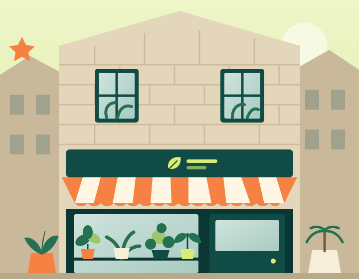

Usually checking the roots
Orlaith Sedgewick
Founder & plant grower
A trained horticulturist with a soft spot for ferns. Orlaith selects every new arrival and can spot a thirsty root ball from across the room.
Our roots
Frond began with a windowsill, a few cuttings and a conviction: a plant shop should leave you feeling more capable, not more confused.

Established 2019
We opened on Gracious Street with a table of young plants and a kettle that was always on. Orlaith brought the horticulture; Benedicta brought a potter’s eye for shape and colour. Euan joined to make sure every growing question got a considered answer.
Today, our shelves carry a deliberately small collection. Not the rarest leaf, or the most expensive specimen. Just plants we know, from growers we can speak to, matched with pots made to be kept.
We are particularly fond of first plants, second chances and customers who arrive with a photo of a very unhappy fern. There is no such thing as a silly plant question.
People, with plants
Founder & plant grower
A trained horticulturist with a soft spot for ferns. Orlaith selects every new arrival and can spot a thirsty root ball from across the room.
Co-founder & pot person
Benedicta pairs glazes with leaves and makes sure every cover pot has breathing room. She believes a good pot should survive several plants.
Plant care & packing
The person behind your handwritten care card. Euan tests our packing, answers care questions and never waters a plant without checking first.
Recyclable cardboard, paper cushioning and reused delivery boxes where we can. Growing pots can come back to the shop, clean and empty, for reuse.
We choose sound roots over perfect symmetry. Slightly wonky plants get the same care and a clearly marked place on our in-shop rescue shelf.